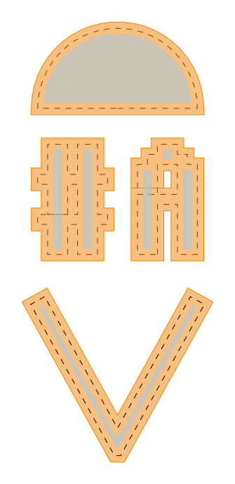

gdstk.offset
- gdstk.offset(polygons, distance, join='miter', tolerance=2, precision=1e-3, use_union=False, layer=0, datatype=0) list
Dilate or erode polygons.
- Parameters:
polygons (Polygon, FlexPath, RobustPath, Reference, sequence) – Polygons to offset. If this is a sequence, each element can be any of the polygonal types or a sequence of points (coordinate pairs or complex).
distance (number) – Offset distance. Positive values dilate the geometry, whereas negative values erode it.
join – Type of joins for the offset polygon. One of “miter”, “bevel”, or “round”.
tolerance – For miter joints, this number must be at least 2 and it represents the maximal distance in multiples of offset between new vertices and their original position before beveling to avoid spikes at acute joints. For round joints, it indicates the curvature resolution in number of points per full circle.
precision – Desired precision for rounding vertex coordinates.
use_union – Apply a union operation before the offset to merge adjacent polygons.
layer – layer number assigned to the resulting polygons.
datatype – data type number assigned to the resulting polygons.
- Returns:
List of
gdstk.Polygon.
Examples
>>> text = gdstk.text("#A", 10, (0, 0), datatype=1) >>> circle = gdstk.ellipse((5, 11), 5, initial_angle=0, ... final_angle=numpy.pi, datatype=1) >>> path = gdstk.FlexPath([(0, -1), (5, -10), (10, -1)], 1, >>> datatype=1) >>> dilated = gdstk.offset(text + [circle, path], 0.4) >>> eroded = gdstk.offset(text + [circle, path], -0.4, ... use_union=True, layer=1)
Notes
Repetitions are not applied to any elements, except references and their contents.